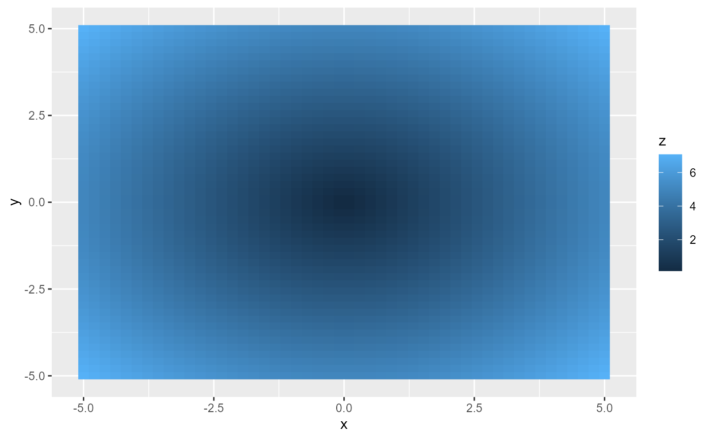
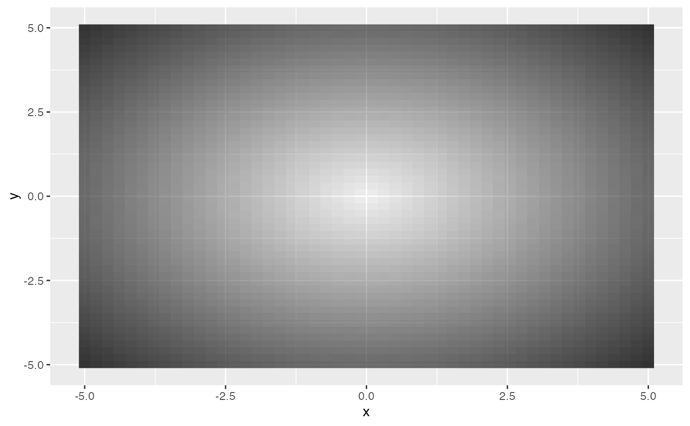
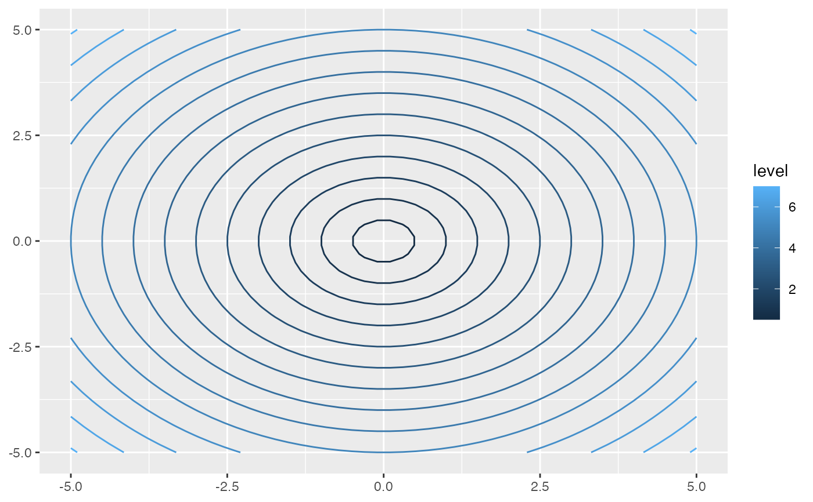
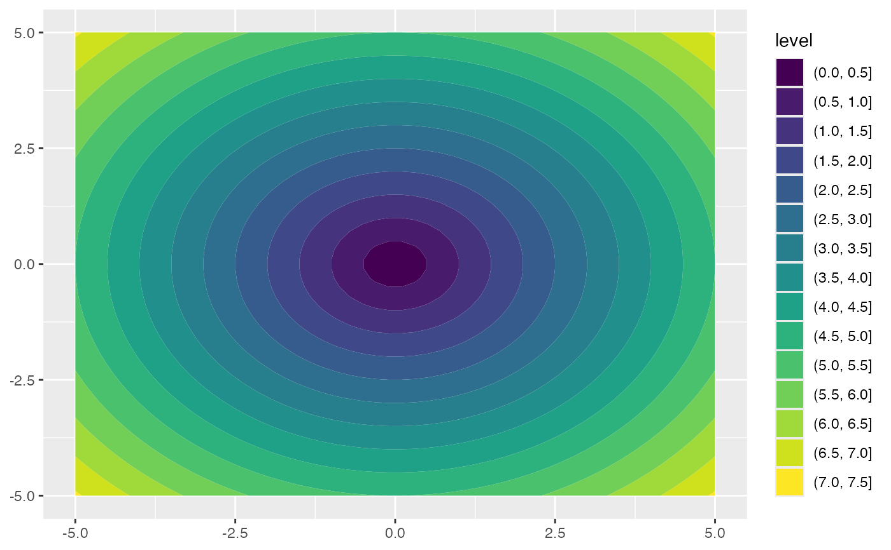
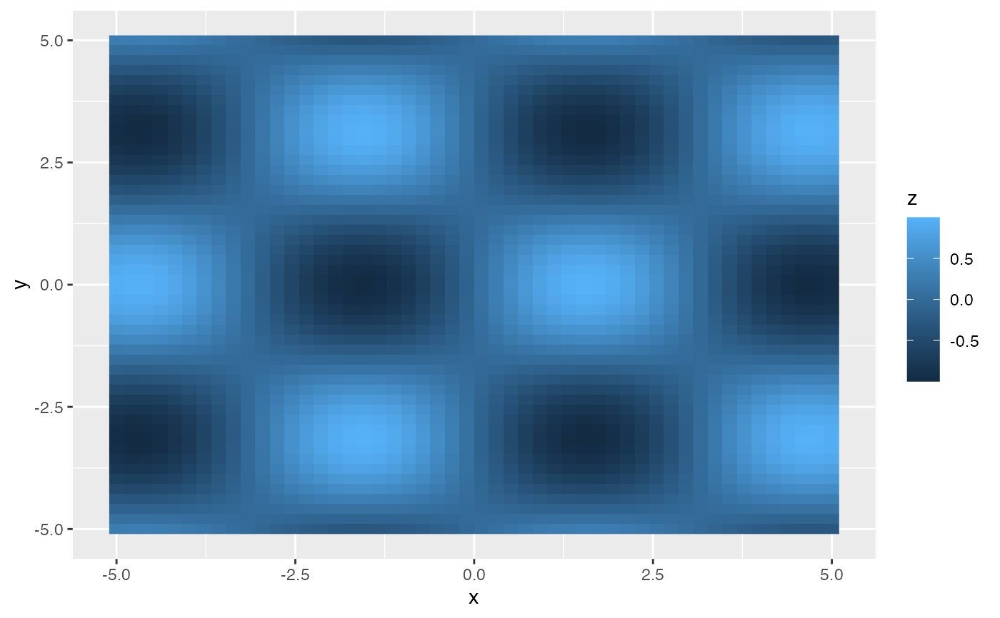
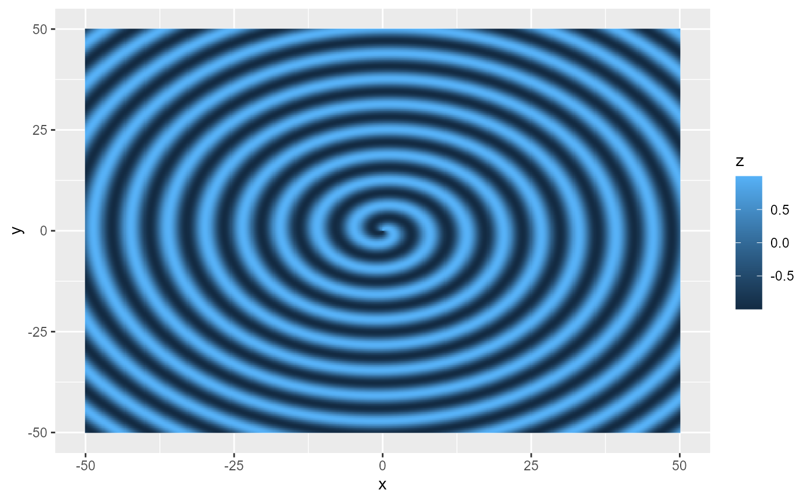
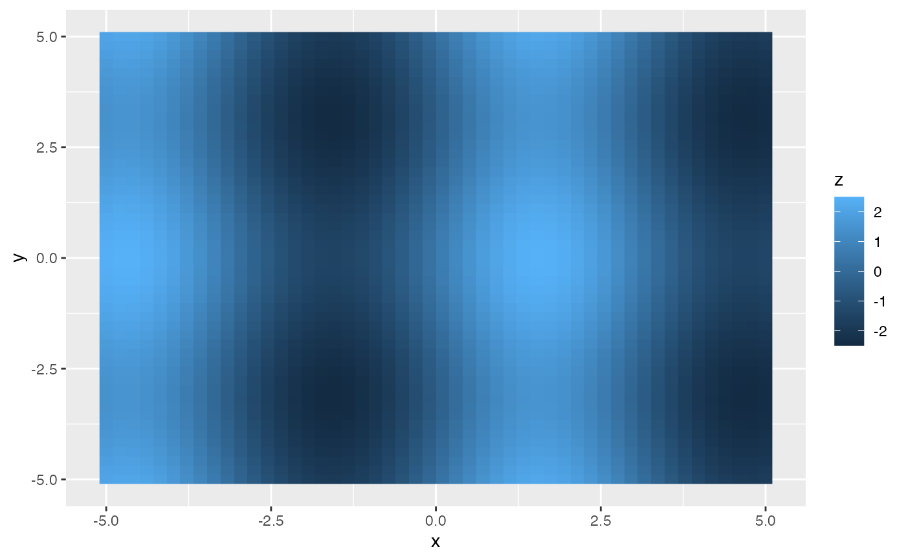

Create a 2D Function Visualization Layer of the Norm of a Vector Field
Source:R/geom_function_2d_1d.R
geom_function_2d_1d.Rdgeom_function_2d_1d adds a layer to visualize 2D functions or vector fields in a ggplot2 plot.
Usage
geom_function_2d_1d(
mapping = NULL,
data = NULL,
stat = StatFunction2d,
geom = GeomFunction2d,
...,
position = "identity",
fun = NULL,
xlim = NULL,
ylim = NULL,
n = NULL,
args = list(),
type = "raster",
bins = NULL,
binwidth = NULL,
breaks = NULL,
show.legend = TRUE,
inherit.aes = TRUE
)
stat_function_2d_1d(
mapping = NULL,
data = NULL,
geom = GeomFunction2d,
position = "identity",
...,
na.rm = FALSE,
show.legend = NA,
inherit.aes = TRUE,
fun = NULL,
xlim = c(-1, 1),
ylim = c(-1, 1),
n = 50,
args = list()
)
StatFunction2d
GeomFunction2d
StatFunction2dContour
StatFunction2dContourFilledArguments
- mapping
Aesthetic mappings, created using
aes(). IfNULL, defaults are used.- data
Optional data frame to override the default data source.
- stat
Statistical transformation to use. Defaults to
StatFunction2d.- geom
Geom used for rendering. Defaults to
GeomFunction2d.- ...
Other arguments passed to the layer, such as additional parameters.
- position
Position adjustment for the layer. Defaults to
"identity".- fun
A function that takes a matrix of x, y values and returns a matrix of dx, dy values.
- xlim
Numeric vector of length 2 specifying the x-range of the grid. Required if
funis provided.- ylim
Numeric vector of length 2 specifying the y-range of the grid. Required if
funis provided.- n
Number of points in the grid along each axis. Defaults to
50instat_function_2d_1d.- args
A named list of additional arguments passed to
fun.- type
Character. Type of visualization:
"raster"(default),"contour", or"contour_filled".- bins
Number of contour bins. Only used when
typeis"contour"or"contour_filled".- binwidth
Width of contour bins. Only used when
typeis"contour"or"contour_filled".- breaks
Numeric vector of specific contour break values. Only used when
typeis"contour"or"contour_filled".- show.legend
Logical. Should this layer be included in the legends?
NAincludes if aesthetics are mapped.- inherit.aes
If
FALSE, overrides default aesthetics rather than combining them.- na.rm
Logical. Should missing values be removed? Defaults to
FALSE.
Computed variables
These are calculated by the stat part of the layer and can be accessed
with ggplot2::after_stat().
after_stat(x)Grid x coordinates.
after_stat(y)Grid y coordinates.
after_stat(z)Function values on the grid for raster and contour inputs. The raster display maps
fill = after_stat(z)by default.after_stat(level)Contour level for
type = "contour"ortype = "contour_filled".after_stat(nlevel)Contour level scaled to a maximum of 1.
after_stat(piece)Contour piece identifier.
after_stat(level_low)Lower boundary of each filled-contour band.
after_stat(level_high)Upper boundary of each filled-contour band.
after_stat(level_mid)Midpoint of each filled-contour band.
Dropped variables
z is used to compute contour lines or filled contour bands and is not
available after contouring.
Aesthetics
geom_function_2d_1d() does not require input aesthetics when fun is
supplied. Raster layers understand x, y, fill, alpha, and group;
contour layers use ggplot2's contour aesthetics, including colour,
linetype, linewidth, fill, and group depending on type.
See also
ggplot2::geom_raster() and ggplot2::geom_contour() for the
underlying raster and contour drawing conventions.
Examples
# Function that calculates the norm
f <- function(v) {
x <- v[1]
y <- v[2]
c(sqrt(x^2 + y^2))
}
ggplot() +
geom_function_2d_1d(fun = f, xlim = c(-5, 5), ylim = c(-5, 5))

# Sinusoidal combination of sine and cosine
f_sin_cos <- function(v) {
x <- v[1]
y <- v[2]
sin(x) * cos(y)
}
ggplot() +
geom_function_2d_1d(fun = f_sin_cos, xlim = c(-5, 5), ylim = c(-5, 5))

# Gaussian bump function
f_gaussian <- function(v) {
x <- v[1]
y <- v[2]
exp(-(x^2 + y^2) / 2)
}
ggplot() +
geom_function_2d_1d(fun = f_gaussian, xlim = c(-5, 5), ylim = c(-5, 5))

# Radial sine wave function
f_radial_wave <- function(v) {
x <- v[1]
y <- v[2]
r <- sqrt(x^2 + y^2)
sin(r)
}
# Some functions need more resolution for clarity
ggplot() +
geom_function_2d_1d(fun = f_radial_wave, xlim = c(-50, 50), ylim = c(-50, 50), n = 100)

# Complex combination of radial and angular components
f_complex <- function(v) {
x <- v[1]
y <- v[2]
r <- sqrt(x^2 + y^2)
theta <- atan2(y, x)
sin(r) * cos(theta)
}
ggplot() +
geom_function_2d_1d(fun = f_complex, xlim = c(-50, 50), ylim = c(-50, 50), n = 500)

# Spiral pattern function
f_spiral <- function(v) {
x <- v[1]
y <- v[2]
r <- sqrt(x^2 + y^2)
theta <- atan2(y, x)
sin(r + theta)
}
ggplot() +
geom_function_2d_1d(fun = f_spiral, xlim = c(-50, 50), ylim = c(-50, 50), n = 500)

# Parameterized scalar field via `args`
f <- function(v, a = 1, b = 1) {
a * sin(v[1]) + b * cos(v[2])
}
ggplot() +
geom_function_2d_1d(
fun = f,
xlim = c(-5, 5),
ylim = c(-5, 5),
args = list(a = 2, b = 0.5)
)
